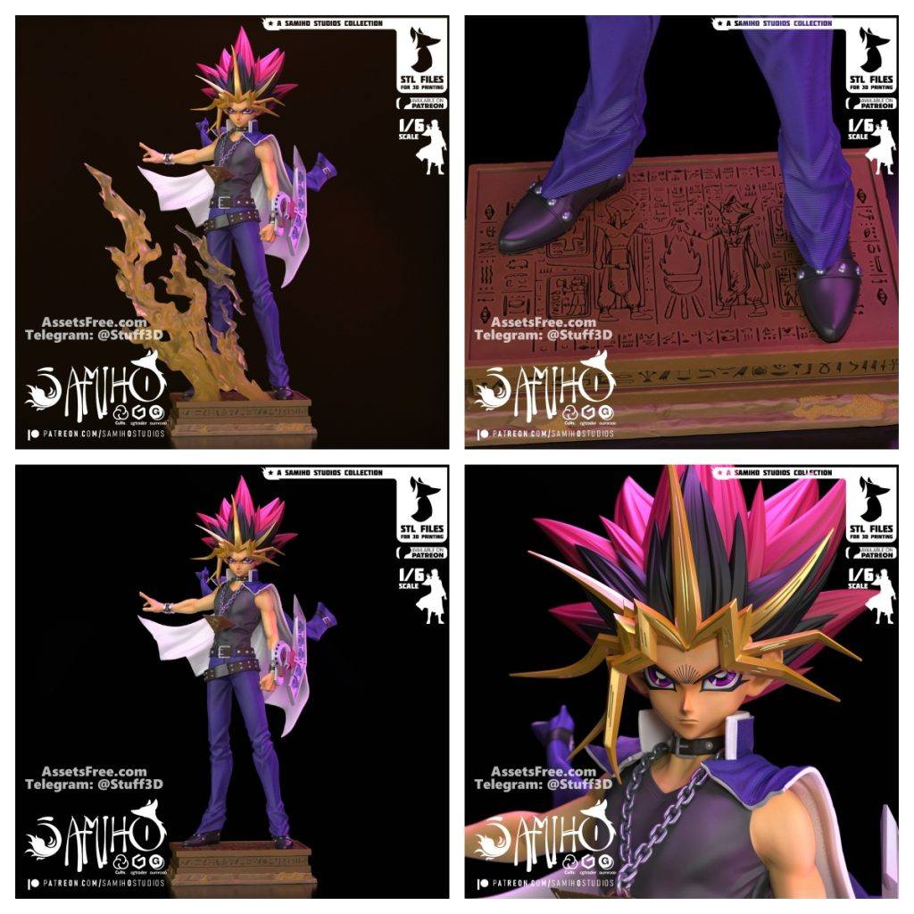

妯″瀷鍒嗕韩
2025骞?2鏈?5鏃Tl鍥剧焊鏂囦欢鍒嗕韩
浠婂ぉ鍒嗕韩鐨勬ā鍨嬪寘鍚涓粡鍏歌鑹诧細楝肩伃涓変汉缁勮兏鍍忥紝杩樺師涓嶉敊锛岄€傚悎鎵撳嵃缁冧範锛涙钘ゆ父鎴忛洉鍍忥紝缁忓吀鍗＄墝瀵瑰喅鍦烘櫙锛岀粏鑺備赴瀵岋紱鏈芥湪鐧藉搲閫犲瀷鍐峰郴锛屽垁涓庢姭椋庣殑鍔ㄦ€佹劅鍗佽冻锛涙睙涔嬪矝鐩惧瓙灞曠幇浜嗘爣蹇楁€ф皵璐紝绮変笣鍚戞帹鑽愶紱琛€鎴橀挗閿箔鍒欏埢鐢讳簡鎴樹簤鍦烘櫙锛岄€傚悎鍐涗簨棰樻潗鐖卞ソ鑰呮敹钘忋€?/p>


閾炬帴: https://pan.baidu.com/s/18kN8iwdyiGdj1dW-zbRseQ 鎻愬彇鐮? 2wri
浠ヤ笂鍐呭浠呬緵涓汉浣跨敤锛堥潪鍟嗙敤锛?/p>
ONLY for PERSONAL (NON-COMMERCIAL) use.
鍔犵兢鑾峰緱鏇村鍏嶈垂妯″瀷锛?/p>